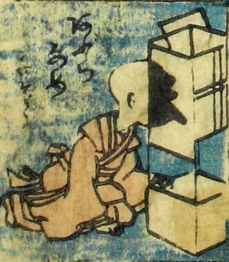

油舐め；アブラナメ，行灯；アンドン，小坊主；コボウズ，男；オトコ

油舐め。小坊主が行灯の脇に座り、行灯に頭を寄せて、油を舐めようとしている。コマの題に「あふらなめ」とあり、続く数文字はかすれて判読できない。
著作者：芳盛／出典：親書誌：U426_nichibunken_0073：しん板化物尽し；シンパンバケモノヅクシ／日付：2006／資源識別子：U426_nichibunken_0073_0047_0000
Copyright (c)2010- International Research Center for Japanese Studies, Kyoto, Japan. All rights reserved.